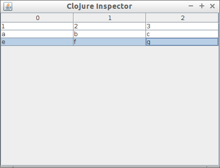
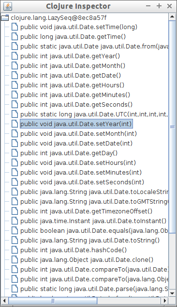

Clojure
Table of Contents
- 1. Clojure
- 1.1. Overview
- 1.2. Toolset and Files Formats
- 1.3. Basic Syntax
- 1.4. List Comprehension
- 1.5. S-expression parser, Serializer and Interpreter
- 1.6. IO / Input and Output
- 1.7. Documentation / Docstring and Reflection, Instrospection
- 1.8. Macros
- 1.9. Java Interoperability
- 1.10. Resources
1 Clojure
1.1 Overview
Clojure is a functional programming lisp dialect that leverages the access to all Java platform libraries. It is based on Scheme, Common Lisp, ML and Haskell.
Features:
- Java API interface
- Hosted on JVM (Java Virtual Machine)
- Can compile to Java Bytecodes
- Immutable data types
- Very readable lisp syntax
- Common lisp style macros
- Functional Programming capabilities
- Meta-programming capabilities
- Namespace handling
- Dynamic Typing
Downsides:
- Slow startup time.
- Don't have tail recursion elimination, so loop must be used instead of recursion.
- Low IDE support
1.2 Toolset and Files Formats
File Formats
| .clj | Clojure Source Code. |
| .class | Compiled java byte code |
| .jar | Java archive - A zip file containing compiled java classes. |
| .war | Web Application to be deployed on servlet. |
| pom.xml | Project Object Model, stores project data and various configuration detail used by Maven to build the project |
Tools
| Tool | Description |
|---|---|
| Ant | Tool to build java code, equivalent to Makefile in C |
| Maven | Build automation tool that can resolve dependecies. |
| Lenigren | Tool to automate, build, deployment and testing of Clojure code. |
Lein
| lein deps | Installs dependencies in lib/ directory |
| lein test <pred> | Runs the project's tests, optionally filtered on PRED |
| lein compile | Ahead-of-time compiles into classes/ |
| lein repl | Launches a REPL with the project classpath configured |
| lein clean | Removes all build artifacts |
| lein jar | Creates a jar of the project |
| lein uberjar | Creates a standalone jar with all dependencies |
| lein pom | Outputs a pom.xml file for interop with Maven |
| lein install | Installs in local repo (currently requires mvn) |
| lein help <task> | Displays tasks |
1.3 Basic Syntax
1.3.1 Variables
- Global Variables
user=> (def a 100.23) #'user/a user=> (def alist '(1 2 3 4 5)) #'user/alist user=> (def my-string "Hello world Clojure") #'user/my-string user=> a 100.23 user=> my-string "Hello world Clojure" user=> alist (1 2 3 4 5) user=> user=> user=> (def list-of-symbols '(sym1 symb2 sym3)) #'user/list-of-symbols user=> list-of-symbols (sym1 symb2 sym3) user=>
- Lexical Bind (Local Variables)
user=> (let [ a 10 b 20 c 100] (+ a b c)) 130 user=>
1.3.2 Function Declaration
1.3.2.1 Simple Function
user=> (defn f [x y] (+ (* 3 x) (* 4 y))) #'user/f user=> user=> (f 4 5) 32 user=> (f 5 6) 39 user=>
1.3.2.2 Function With Docstring
user=> (defn sqr [x] "Computes the square of a number" (* x x)) #'user/sqr user=> (sqr 10) 100 user=> (map sqr '(1 2 3 4 5 6)) (1 4 9 16 25 36) user=> user=> (doc sqr) ------------------------- user/sqr ([x]) Computes the square of a number nil user=>
1.3.2.3 Variadic Function
Function with variable number of arguments:
user=> (defn my-variadic-fun [& vars] (println vars)) user=> user=> (my-variadic-fun 1 2 3 4 'z 'w ) (1 2 3 4 z w) nil user=> (my-variadic-fun 1 2 3 4 'z 'w :key) (1 2 3 4 z w :key) nil user=> user=> (my-variadic-fun) nil user=> (defn variadic2 [x & vars] (do (println x) (println vars))) user=> user=> (variadic2 2 'a 'b' 'c 'd) 2 (a b' c d) nil user=> user=> (variadic2 10) 10 nil nil user=>
1.3.2.4 Function with Optional arguments
(defn fun-optional-c [a b & [c]] {:a a :b b :c c}) user=> (fun-optional-c 1 2) {:a 1, :b 2, :c nil} user=> user=> (fun-optional-c 1 2 3) {:a 1, :b 2, :c 3} user=>
1.3.2.5 Function with Predefined Values
(defn predefined-c-and-d [a b & {:keys [c d] :or {c 100 d 30}}] { :a a, :b b, :c c, :d d}) user=> (predefined-c-and-d 10 20) {:a 10, :b 20, :c 100, :d 30} user=> user=> (predefined-c-and-d 10 20 :c 'c ) {:a 10, :b 20, :c c, :d 30} user=> user=> (predefined-c-and-d 10 20 :d -100 ) {:a 10, :b 20, :c 100, :d -100} user=> user=> (predefined-c-and-d 10 20 :c -90 :d -232 ) {:a 10, :b 20, :c -90, :d -232} user=>
1.3.2.6 Anonymous/ Lambda Functions
(fn [<args>] (<body>))
Anonymous Functions
user=> (fn [x] (* x x)) #object[user$eval369$fn__370 0x11bfe23 "user$eval369$fn__370@11bfe23"] user=> user=> ((fn [x] (* x x)) 5) 25 user=> user=> (map (fn [x] (* x x)) '(1 2 3 4 5)) (1 4 9 16 25) user=> (map (fn [x] (* x x)) '[1 2 3 4 5]) (1 4 9 16 25) user=> user=> (map (fn [x] (* x x)) (range 1 10)) (1 4 9 16 25 36 49 64 81) user=> user=> ((fn [x y] (+ ( * 2 x) (* 3 y))) 10 20) 80 user=> user=> ((fn [a b c] (+ a b c)) 2 4 6) 12 user=> ;;; Lambda functions can be stored in variables ;;; user=> (def f_xy (fn [x y] (+ (* 2 x) (* 3 y)))) #'user/f_xy user=> user=> (f_xy 10 20) 80 user=> (f_xy 10 30) 110 user=>
Lambda Function Macro
Clojure has a pretty handy macro that allows to create lambda functions easily.
user=> (#(+ 3 %) 4) 7 user=> (#(+ 3 %) 5) 8 user=> (map #(+ 3 %) '[1 2 3 4 5]) (4 5 6 7 8) user=> ;;; This is equivalent to ;; user=> (map (fn [x] (+ 3 x)) '[1 2 3 4 5]) (4 5 6 7 8) user=> (Math/pow 2 3) 8.0 user=> (map #(Math/pow % 3) '[1 2 3 4 5 6]) (1.0 8.0 27.0 64.0 125.0 216.0) ;; It is equivalent to: user=> (map (fn [x] (Math/pow x 3)) '[1 2 3 4 5 6]) (1.0 8.0 27.0 64.0 125.0 216.0) user=> ;;;;;;; user=> (map #(Math/pow 2 %) '[1 2 3 4 5 6]) (2.0 4.0 8.0 16.0 32.0 64.0) ;;;------------------------------------;; user=> #(+ (* 3 %1) (* 4 %2)) #object[user$eval435$fn__436 0x79dfad "user$eval435$fn__436@79dfad"] user=> ;; It is equivalent to user=> (fn [x y] (+ (* 3 x) (* 4 y))) #object[user$eval439$fn__440 0x1629510 "user$eval439$fn__440@1629510"] user=> user=> ( #(+ (* 3 %1) (* 4 %2)) 4 5) 32 user=> user=> (map #(+ (* 3 %1) (* 4 %2)) '[1 2 3 4 5] '[4 5 6 8 9]) (19 26 33 44 51) user=>
1.3.3 Predicates
Type Checking Predicates
| Predicate | Returns true for | |
|---|---|---|
| symbol? | (symbol? 'sym) |
Symbol |
| string? | (string? "something") |
String |
| list? | (list? '(1 2 3 4 5)) |
List, linked list |
| vector? | (vector? '[1 2 3 4]) |
Array |
| map? | (map? {:a 10 :b 20 :c 30}) |
Hash table |
| number? | (number? 2.23) |
|
| nil? | (nil? nil) |
End of a list or java null value |
Special Predicates
| Predicate | |
|---|---|
| true? | Test if value is true |
| false? | Test if value is false |
| nil? | Test if value is nil (java null) |
| empty? | Test if list, vector or map(hash) is empty |
user=> (map symbol? '(symbol 1 2.323 "hello")) (true false false false) user=> user=> (map number? '(symbol 1 2.323 "hello")) (false true true false) user=> user=> (map string? '(symbol 1 2.323 "hello")) (false false false true) user=> user=> (map list? '(symbol 1 2.323 "hello" nil '() (1 2 3 4))) (false false false false false true true) user=> user=> (empty? {}) true user=> (empty? '()) true user=> (empty? '[]) true user=> user=> (nil? nil) true user=> (nil? {}) false user=> (nil? '()) false user=> (nil? '[]) false user=>
1.3.4 Data Types
Symbol
user=> (type 'sym) clojure.lang.Symbol user=> user=> (class 'sym) clojure.lang.Symbol user=> user=> 'this-as-symbol this-as-symbol user=> '(list of symbols) (list of symbols) user=> user=> '[vector of symbols] [vector of symbols] user=> user=> [:a :b :c] [:a :b :c] user=> (keyword "hello") :hello user=>
String
user=> "a string" "a string" user=> (class "a string") java.lang.String user=> (type "a string") java.lang.String user=>
Number
user=> 0x1023
4131
user=>
user=> -10e3
-10000.0
user=>
user=>
user=> (type 1e3)
java.lang.Double
user=> (type 1000)
java.lang.Long
user=> (type 10)
java.lang.Long
user=> (class 1e3)
java.lang.Double
user=>
List
user=>
user=> (type '(a b c d e))
clojure.lang.PersistentList
user=>
user=> (class '(1 2 3 4 5))
clojure.lang.PersistentList
user=>
user=> (def xs '(1 2 3 4 5))
#'user/xs
user=>
user=> (first xs)
1
user=> (second xs)
2
user=> (rest xs)
(2 3 4 5)
user=>
;; Get the nth element
;;------------------------
user=>
user=> (nth xs 0)
1
user=> (nth xs 1)
2
user=> (nth xs 3)
4
user=>
;; List Constructor Cons
;;
user=> (cons 1 nil)
(1)
user=> (cons 1 (cons 2 (cons 3 nil)))
(1 2 3)
user=>
Vector
user=> (type [1 2 3 4]) clojure.lang.PersistentVector user=> user=> (class [1 2 3 4]) clojure.lang.PersistentVector user=> user=> (nth [1 2 3 4] 0) 1 user=> (nth [1 2 3 4] 3) 4 user=> (first [1 2 3 4]) 1 user=> (second [1 2 3 4]) 2 user=> (rest [1 2 3 4]) (2 3 4) user=>
Hash Map / Hash Table
;; Create a Hash map ;;---------------------- user=> user=> (def params { :sn "10" :cn "" :locale "ptBR" :num 12345}) #'user/params user=> (:keys params) nil ;; Get all keys ;;---------------------- user=> (keys params) (:sn :cn :locale :num) user=> user=> ;; Select all values ;;---------------------- user=> (vals params) ("10" "" "ptBR" 12345) user=> ;; Select a single key ;;---------------------- user=> (get params :locale) "ptBR" user=> (get params :x) nil user=> (get params :x 'alternative) alternative user=> ;; Select Multiple Keys ;; user=> (select-keys params [:cn :sn]) {:cn "", :sn "10"} user=> (select-keys params [:cn :sn :dumy]) {:cn "", :sn "10"} user=> ;; Select the value from mmultiple keys ;; (defn select-vals [params keys] (vals (select-keys params keys))) user=> (select-vals {:a 123 :b 234 "hello" "world"} [:a "hello"]) (123 "world") user=> user=> (defn apply-vals [hmap f & ks] (apply f (select-vals hmap ks))) #'user/apply-vals user=> user=> (apply-vals {:id 102 :price 10.4 :n 20} * :price :n) 208.0 user=> ;; Create a dictionary from two arrays ;; user=> (zipmap ["x" "y" "z"] [10 20 -30]) {"x" 10, "y" 20, "z" -30} user=> (defn format-params [params] (clojure.string/join "&" (map #(format "%s=%s" %1 %2) (keys params) (vals params)))) user=> (format-params {"x" "1200" "y" 302 "user" "dummy"}) "x=1200&y=302&user=dummy"
1.3.5 String Functions
1.3.5.1 Basic String Functions
;; Load clojure.string namespace as str ;; (require '[clojure.string :as str]) ;; List all functions in the namespace ;; ;;---------------------------- user=> (dir clojure.string) blank? capitalize escape join lower-case re-quote-replacement replace replace-first reverse split split-lines trim trim-newline triml trimr upper-case nil user=> user=> (str/split-lines "line1\nline2\nline3") ["line1" "line2" "line3"] user=> user=> (str/split-lines "line1\rline2\rline3") ["line1\rline2\rline3"] user=> user=> (str/replace "foo bar foobars" #"foo" "0x00121") "0x00121 bar 0x00121bars" user=> user=> (str/join "," ["x" "y" "z"]) "x,y,z" user=> user=> (str/trim " \n\n\nsome \n white space \n\n\n") "some \n white space" user=> user=> (str/split "a,b,c,d," #",") ["a" "b" "c" "d"] user=> user=> (str/join "-" ["a" "b" "c" "d"]) "a-b-c-d" user=> user=> (map str/blank? ["" "\n" "\r" "\r\n" " " "\t" "asdas"]) (true true true true true true false) user=>
1.3.5.2 String Parsing Functions
Integer -> String
user=> (Integer/parseInt "202323") 202323 ;; Scheme Notation: [from type]->[to type] ;; user=> (defn string->int [str] (Integer/parseInt str)) #'user/string->int user=> user=> (string->int "10223232") 10223232 user=>
Float -> String
user=> (Float/parseFloat "2323.2323e-3") 2.3232324 user=> (defn string->float [str] (Float/parseFloat str))
1.3.6 Important Functions
1.3.6.1 Special Functions
Constantly
user=> (map (constantly 10) '(1 2 3 4 5 6)) (10 10 10 10 10 10) user=>
Identity
user=> (map identity '(a b c d 1 2 3 "hello" world)) (a b c d 1 2 3 "hello" world) user=>
Range
user=> (range 1 10) (1 2 3 4 5 6 7 8 9) user=> (range 0 100 10) (0 10 20 30 40 50 60 70 80 90)
1.3.6.2 Higher Order Functions
Map
user=> (map (fn [x] (* x x)) '(1 2 3 4 5 6)) (1 4 9 16 25 36) user=> user=> (map (fn [x y] (+ (* x x) (* y y))) '(1 2 3 4 5) '(3 5 7 8 9)) (10 29 58 80 106) user=>
Mapv
Mapv works just like map, except that it returns a vector instead of a list.
user=> (map #(* % 2) (range 10)) (0 2 4 6 8 10 12 14 16 18) user=> user=> (mapv #(* % 2) (range 10)) [0 2 4 6 8 10 12 14 16 18] user=>
Mapcat
user=>
(defn single-double-triple [x]
[(* x 1) (* x 2) (* x 3)])
#'user/single-double-triple
user=>
user=> (mapcat single-double-triple (range 10))
(0 0 0 1 2 3 2 4 6 3 6 9 4 8 12 5 10 15 6 12 18 7 14 21 8 16 24 9 18 27)
user=>
For-each
It is not defined in the standard library, however it is pretty useful function from scheme to map a function with side effect to a list or vector.
(defn for-each [f xs] (doseq [x xs] (f x))) user=> (for-each println '[1 2 3 4 5 6]) 1 2 3 4 5 6 nil user=>
Filter
user=> (filter even? (range 1 20)) (2 4 6 8 10 12 14 16 18) user=> user=> (filter odd? (range 1 20)) (1 3 5 7 9 11 13 15 17 19) user=>
Apply
Apply a function to a list of arguments
user=> (defn f [x y] (+ (* 3 x) (* 4 y))) user=> user=> (apply f '(7 8)) 53 user=> user=> (apply f '(7 8)) 53 user=> (defn map-apply [f arglist] (map (fn [xs] (apply f xs)) arglist)) #'user/map-apply user=> user=> (map-apply f '((7 8) (3 4) (5 6))) (53 25 39) user=>
Partial
Partial - Partial application.
user=> ((partial + 3) 4) 7 user=> (map (partial + 3) '(1 2 3 4 5 6)) (4 5 6 7 8 9) user=>
Comp
Function Composition
user=> ((comp (partial + 3) (partial * 4)) 10) 43 user=> user=> (map (comp (partial + 3) (partial * 4)) '(1 2 3 4 5 6)) (7 11 15 19 23 27) user=> comp - Can be used to invert predicates user=> (filter (comp not zero?) [0 1 0 2 0 3 0 4]) (1 2 3 4) user=>
Juxt
Apply a list of functions to a single argument.
user=> (def f (juxt (partial + 3) (partial * 4) (partial * 5))) #'user/f user=> (f 5) [8 20 25] user=> (map f '(1 2 3 4 5)) ([4 4 5] [5 8 10] [6 12 15] [7 16 20] [8 20 25]) user=> user=> ((juxt + * min max) 3 4 6) [13 72 3 6] user=>
dotimes
user=>
(dotimes [x 10]
(dotimes [y 10]
(print (format "%3d " (* (inc x) (inc y)))))
(println))
1 2 3 4 5 6 7 8 9 10
2 4 6 8 10 12 14 16 18 20
3 6 9 12 15 18 21 24 27 30
4 8 12 16 20 24 28 32 36 40
5 10 15 20 25 30 35 40 45 50
6 12 18 24 30 36 42 48 54 60
7 14 21 28 35 42 49 56 63 70
8 16 24 32 40 48 56 64 72 80
9 18 27 36 45 54 63 72 81 90
10 20 30 40 50 60 70 80 90 100
nil
user=>
doseq
user=> (doseq [x '[1 2 3 4 5]] (println (+ 2 (* 3 x)))) 5 8 11 14 17 nil user=> user=> (doseq [x '[1 2 3] y '[a b c d e] ] (println (list x y))) (1 a) (1 b) (1 c) (1 d) (1 e) (2 a) (2 b) (2 c) (2 d) (2 e) (3 a) (3 b) (3 c) (3 d) (3 e) nil user
1.3.6.3 Lazy Higher Order Functions
Iterate
The same as the higher order function iterate from Haskell
user=>
user=> (take 5 (iterate (partial + 1) 0))
(0 1 2 3 4)
user=>
user=> (take 15 (iterate (partial + 1) 0))
(0 1 2 3 4 5 6 7 8 9 10 11 12 13 14)
user=>
user=> (take 15 (iterate (partial * 2) 1))
(1 2 4 8 16 32 64 128 256 512 1024 2048 4096 8192 16384)
user=>
Repeat
user=> (take 5 (repeat 10)) (10 10 10 10 10) user=> (take 5 (repeat 5)) (5 5 5 5 5) user=> (take 5 (repeat "a")) ("a" "a" "a" "a" "a") user=>
Repeatedly
Repeatedly works just like repeat, except that it takes a function instead of a value. It calls the function (which must take no arguments, and has side effects) repeatedly and returns a lazy sequence of its values.
user=> (repeatedly 5 #(rand-int 500)) (303 29 253 250 120) user=>
1.4 List Comprehension
user=> (for [x [1 2 3 4]] (* 3 x)) (3 6 9 12) user=> user=> (for [x [1 2 3 4], y [4 5 6]] (+ x y)) (5 6 7 6 7 8 7 8 9 8 9 10) user=> user=> (for [x [1 2 3 4], y [4 5 6]] (println {:x x, :y y :r (+ x y)})) ({:x 1, :y 4, :r 5} {:x 1, :y 5, :r 6} {:x 1, :y 6, :r 7} nil nil {:x 2, :y 4, :r 6} {:x 2, :y 5, :r 7} {:x 2, :y 6, :r 8} nil nil nil {:x 3, :y 4, :r 7} {:x 3, :y 5, :r 8} {:x 3, :y 6, :r 9} nil nil nil {:x 4, :y 4, :r 8} {:x 4, :y 5, :r 9} {:x 4, :y 6, :r 10} nil nil nil nil) ;;; List comprehension with guards ;; user=> (for [x (range 20) :when (= (mod x 3) 0)] x ) (0 3 6 9 12 15 18) user=> user=> user=> (for [x (range 20) :while (< x 10)] x ) (0 1 2 3 4 5 6 7 8 9) user=> user=> user=> (for [ c (range 1 30) a (range 1 (+ 1 c)) b (range 1 (+ 1 a)) :when (= (+ (* a a) (* b b)) (* c c))] [a b c]) ([4 3 5] [8 6 10] [12 5 13] [12 9 15] [15 8 17] [16 12 20] [20 15 25] [24 7 25] [24 10 26] [21 20 29]) user=>
See also:
1.5 S-expression parser, Serializer and Interpreter
eval
Evaluates, interprets a S-expression.
user=> (eval '(+ 1 2 3 4 5)) 15 user=> (eval '(Math/exp 3)) 20.085536923187668 user=>
load
Evaluates, interprets a file containing clojure code, S-expressions.
(load <filename.clj>)
read-string
Parses a S-expression.
user=> (read-string "(Math/exp 3)") (Math/exp 3) user=> user=> (eval (read-string "(Math/exp 3)")) 20.085536923187668 user=> user=> (read-string "{:a 10, :b 20, :c [1 a b c d]}") {:a 10, :b 20, :c [1 a b c d]} user=>
load-string
Evaluates a string.
user=> (def code "(println \"(+ 2 2) =\" ) (+ 2 2)") #'user/code user=> code "(println \"(+ 2 2) =\" ) (+ 2 2)" user=> (println code) (println "(+ 2 2) =" ) (+ 2 2) nil user=> (load-string code) (+ 2 2) = 4 user=>
pr-str
Serialize a s-expression to string.
user=> (pr-str [1 2 3 4 5]) "[1 2 3 4 5]" user=> (pr-str {:a 10 :b 20 :c '[1 a b c d]}) "{:a 10, :b 20, :c [1 a b c d]}" user=> user=> (pr-str '(def f [x] (+ x 3)) ) "(def f [x] (+ x 3))" user=>
1.6 IO / Input and Output
Print in the current line.
user=> (print "Hello world") Hello worldnil user=>
Println
Print in a new line.
user=> (println '[1 2 3 sym1 sym2 sym3 "str"]) [1 2 3 sym1 sym2 sym3 str] nil (do (println "Multiple") (println "Line") (println "printing") (println 'a)) Multiple Line printing a nil user=>
Slurp
Read file, internet protocol like http, ftp …
user=> (println (slurp "/etc/host.conf")) # The "order" line is only used by old versions of the C library. order hosts,bind multi on nil user=> user=> (slurp "http://httpbin.org/user-agent") "{\n \"user-agent\": \"Java/1.8.0_51\"\n}\n" user=> user=> (println (slurp "http://httpbin.org/user-agent")) { "user-agent": "Java/1.8.0_51" } nil user=>
Spit
Write a file.
user=>
user=> (spit "/tmp/filetest.txt" "hello world clojure")
nil
user=> (slurp "/tmp/filetest.txt")
"hello world clojure"
user=>
1.7 Documentation / Docstring and Reflection, Instrospection
Show docstring
user=> (doc apply) ------------------------- clojure.core/apply ([f args] [f x args] [f x y args] [f x y z args] [f a b c d & args]) Applies fn f to the argument list formed by prepending intervening arguments to args. nil user=> user=> (doc Math/sin) nil user=>
Retrive Source Code
user=> (source reverse) (defn reverse "Returns a seq of the items in coll in reverse order. Not lazy." {:added "1.0" :static true} [coll] (reduce1 conj () coll)) nil user=>
Show all functions in a name space
user=> (dir clojure.string) blank? capitalize escape join lower-case re-quote-replacement replace replace-first reverse split split-lines trim trim-newline triml trimr upper-case nil
Inspect a Table
user=> (require 'clojure.inspector) nil user=> (clojure.inspector/inspect-table '((1 2 3) (a b c) (e f g)))

1.8 Macros
Clojure macros are based on Common Lisp macros.
1.8.1 Quasi quote
1.8.2 Macros by Example
Print all forms inside the parenthesis
(defmacro $p [func & args] `(println (~func ~@args))) user=> (slurp "http://httpbin.org/get") "{\n \"args\": {}, \n \"headers\": {\n \"Accept\": \"text/html, image/gif, image/jpeg, *; q=.2, */*; q=.2\", \n \"Host\": \"httpbin.org\", \n \"User-Agent\": \"Java/1.8.0_51\"\n }, \n \"origin\": \"183.173.124.2\", \n \"url\": \"http://httpbin.org/get\"\n}\n user=> ($p slurp "http://httpbin.org/get") { "args": {}, "headers": { "Accept": "text/html, image/gif, image/jpeg, *; q=.2, */*; q=.2", "Host": "httpbin.org", "User-Agent": "Java/1.8.0_51" }, "origin": "183.173.124.2", "url": "http://httpbin.org/get" } ;; Macro expansion ;; user=> (macroexpand '($p slurp "http://httpbin.org/get")) (clojure.core/println (slurp "http://httpbin.org/get")) user=>
Invert a boolean value from a s-expression
(defmacro $n [func & args] `(not (~func ~@args))) user=> (def x 10) #'user/x user=> user=> (or (> 3 x) (= 5 x) (< 15)) true user=> ($n or (> 3 x) (= 5 x) (< 15)) false user=> user=> (macroexpand '($n or (> 3 x) (= 5 x) (< 15))) (clojure.core/not (or (> 3 x) (= 5 x) (< 15))) user=>
Debugging Injection Macro
(defmacro $d [func & args] `(let [p# (~func ~@args)] (do (println (str (quote (~func ~@args)) " = " p#)) p#))) user=> (+ 10 ($d + 3 ($d * 3 4) ($d * 1 2 3 4 5))) (* 3 4) = 12 (* 1 2 3 4 5) = 120 (+ 3 ($d * 3 4) ($d * 1 2 3 4 5)) = 135 145 user=> (defn pyth [ x y ] ($d * ($d * x x) ($d * y y))) #'user/pyth user=> (pyth 4 5) (* x x) = 16 (* y y) = 25 (* ($d * x x) ($d * y y)) = 400 400 user=>
Infix to Postfix operator
(defmacro $ [a op b] `(~op ~a ~b)) user=> ($ 10 + 20) 30 user=> ($ 3 * 10) 30 user=> (macroexpand '($ 10 + 20)) (+ 10 20) user=> user=> (def x 10) #'user/x user=> user=> ($ ($ 3 > x) or ($ x < 15)) true
See also:
1.9 Java Interoperability
One of greatest advantages of Clojure to other Lisp's dialects is the Java interoperabilty that allows the user to use the full power of Java ecosystem.
1.9.1 Java API Access
user=>
user=> (System/getProperty "java.vm.version")
"25.51-b03"
user=> (System/getProperty "java.home")
"/opt/java/jre"
user=> (System/getProperty "java.runtime.name")
"Java(TM) SE Runtime Environment"
user=> (System/getProperty "java.vm.name")
"Java HotSpot(TM) Server VM"
user=> (System/getProperty "java.vm.vendor")
"Oracle Corporation"
user=>
user=> (map #(System/getProperty %)
'("java.vm.vendor"
"java.home"
"java.runtime.name"
"java.vm.name"))
("Oracle Corporation"
"/opt/java/jre"
"Java(TM) SE Runtime Environment"
"Java HotSpot(TM) Server VM")
user=>
1.9.2 Call Class Static Method
;;; java.lang.Math.log10(10); ;; user=> (java.lang.Math/log10 100) 2.0 user=> (map java.lang.Math/log10 '[1 10 100 1000]) CompilerException java.lang.RuntimeException: Unable to find static field: log10 in class java.lang.Math, compiling:(NO_SOURCE_PATH:28:1) user=> user=> (map #(java.lang.Math/log10 %) '[1 10 100 1000]) (0.0 1.0 2.0 3.0) user=> user=> user=> (def log10 #(java.lang.Math/log10 %)) #'user/log10 user=> user=> (map log10 '[1 10 100 1000]) (0.0 1.0 2.0 3.0) user=> ;;; Or Just: user=> (def log10 #(Math/log10 %)) #'user/log10 user=> user=> (map log10 '[1 10 100 1000]) (0.0 1.0 2.0 3.0) user=>
1.9.3 Java Constructor and Methods
;;; Create a new data object ;; user=> (new java.util.Date) #inst "2015-10-02T20:27:21.801-00:00" user=> user=> user=> (def today (new java.util.Date)) #'user/today user=> today #inst "2015-10-02T20:27:50.289-00:00" user=> user=> (.toString today) "Fri Oct 02 17:27:50 BRT 2015" user=> user=> user=> (.getMonth today) ;;; today.getMonth() 9 user=> (.getYear today) ;;; today.getYear() 115 user=> (+ 1900 (.getYear today)) ;; 1900 + today.getYear() 2015 user=> user=> (.getDay today) 5 user=> ;; Create a function that returns the current date object. ;; user=> (defn today-date [] (new java.util.Date)) #'user/today-date user=> user=> (today-date) #inst "2015-10-02T20:28:51.794-00:00" user=> ;; The macro (memfn <method>) invokes a object method ;; user=> ((memfn getMonth) today) 9 user=> ;; Invoke the method .toString() ;; ;; user=> (def obj->string (memfn toString)) #'user/obj->string user=> user=> (obj->string today) "Fri Oct 02 17:28:57 BRT 2015" user=> ;; Invoke multiple methods at same time ;; user=> ((juxt (memfn getMonth) (memfn getYear) (memfn getYear)) today) [9 115 115] user=>
1.9.4 Doto Macro
1.9.4.1 Doto Macro Expansion
Without Doto Macro
user=> (def j (new java.util.HashMap)) #'user/j user=> j {} user=> (.put j "a" 100) nil user=> (.put j "b" "Hello world") nil user=> j {"a" 100, "b" "Hello world"} user=>
With Doto Macro
user=> (def j (doto (new java.util.HashMap) (.put "a" 100) (.put "b" "Hello world"))) #'user/j user=> j {"a" 100, "b" "Hello world"} user=>
1.9.4.2 Simple GUI
user=>
(doto (javax.swing.JFrame.)
(.setLayout (java.awt.GridLayout. 2 2 3 3))
(.add (javax.swing.JTextField.))
(.add (javax.swing.JLabel. "Enter some text"))
(.setSize 300 80)
(.setVisible true))
1.9.4.3 Java Import
Import Packages
;; import java.util.Date, java.util.Stack ;; import java.net.Proxy, java.net.URI ;; user=> (import [java.util Date Stack] [java.net Proxy URI]) java.net.URI user=> (Date.) #inst "2015-09-16T01:39:21.365-00:00" user=> user=> (java.util.Date.) #inst "2015-09-16T18:11:15.686-00:00" user=> user=> (new java.util.Date) #inst "2015-09-16T18:11:21.166-00:00" user=>
Import Specific Packages from Java Libraries
user=>
user=> (import '(java.util Date GregorianCalendar))
java.util.GregorianCalendar
user=>
user=> Date
java.util.Date
user=>
user=> GregorianCalendar
java.util.GregorianCalendar
user=>
user=> (new Date)
#inst "2015-09-16T18:12:46.308-00:00"
user=>
user=> (new GregorianCalendar)
#inst "2015-09-16T15:12:54.212-03:00"
user=>
Access Constans in a Java Class
user=> (. java.util.Calendar APRIL) 3 user=> java.util.Calendar/APRIL 3 user=> user=> (import [java.util Calendar]) java.util.Calendar user=> user=> (. Calendar APRIL) 3 user=>
1.9.5 Classpath
Print Class Path
user=> (System/getProperty "java.class.path") "/opt/clojure.jar:/home/tux/PycharmProjects/clojure" user=> user=> (println (seq (.getURLs (java.lang.ClassLoader/getSystemClassLoader)))) (#object[java.net.URL 0x1ee81fc file:/opt/clojure.jar] #object[java.net.URL 0x2aa843 file:/home/tux/PycharmProjects/clojure/]) nil
1.9.6 Load Jar file at run time
(defn load-jar [jarfile] (.addURL (.getContextClassLoader (Thread/currentThread)) (.toURL (.toURI (new java.io.File jarfile))))) (load-jar "<jarfile.jar>") (import <jarfile-class...>)
1.9.7 Java Instrospection
user=> (.getMethods java.util.Date) #object["[Ljava.lang.reflect.Method;" 0x826f61 "[Ljava.lang.reflect.Method;@826f61"] user=> user=> (take 4 (.getMethods java.util.Date)) (#object[java.lang.reflect.Method 0x15fac5f "public void java.util.Date.setTime(long)"] #object[java.lang.reflect.Method 0x12793 "public long java.util.Date.getTime()"] #object[java.lang.reflect.Method 0x15572a7 "public static java.util.Date java.util.Date.from(java.time.Instant)"] #object[java.lang.reflect.Method 0x1d94571 "public int java.util.Date.getYear()"]) user=> user=> (map (memfn toString) (take 4 (.getMethods java.util.Date))) ("public void java.util.Date.setTime(long)" "public long java.util.Date.getTime()" "public static java.util.Date java.util.Date.from(java.time.Instant)" "public int java.util.Date.getYear()") user=> user=> (defn for-each [f xs] (doseq [x xs] (f x))) #'user/for-each user=> user=> (for-each println (map (memfn toString) (take 4 (.getMethods java.util.Date)))) public void java.util.Date.setTime(long) public long java.util.Date.getTime() public static java.util.Date java.util.Date.from(java.time.Instant) public int java.util.Date.getYear() nil user=> user=> (for-each println (map (memfn toString) (seq (.getMethods java.util.Date)))) public void java.util.Date.setTime(long) public long java.util.Date.getTime() public static java.util.Date java.util.Date.from(java.time.Instant) public int java.util.Date.getYear() public int java.util.Date.getMonth() public int java.util.Date.getDate() public int java.util.Date.getHours() public int java.util.Date.getMinutes() public int java.util.Date.getSeconds() public static long java.util.Date.UTC(int,int,int,int,int,int) public void java.util.Date.setYear(int) public void java.util.Date.setMonth(int) ... (defn get-methods [java-class] (map (memfn toString) (seq ((memfn getMethods) java-class)))) (defn show-methods [java-class] (for-each println (get-methods java-class))) user=> (get-methods java.util.Date) ("public void java.util.Date.setTime(long)" "public long java.util.Date.getTime()" "public static java.util.Date java.util.Date.from(java.time.Instant)" "public int java.util.Date.getYear()" "public int java.util.Date.getMonth()" "public int java.util.Date.getDate()" "public int java.util.Date.getHours()" "public int java.util.Date.getMinutes()" "public int java.util.Date.getSeconds()" "public static long java.util.Date.UTC(int,int,int,int,int,int)" "public void java.util.Date.setYear(int)" "public void java.util.Date.setMonth(int)" user=> (show-methods java.util.Date) public void java.util.Date.setTime(long) public long java.util.Date.getTime() public static java.util.Date java.util.Date.from(java.time.Instant) public int java.util.Date.getYear() public int java.util.Date.getMonth() public int java.util.Date.getDate() public int java.util.Date.getHours() public int java.util.Date.getMinutes() public int java.util.Date.getSeconds() ... user=> (def m (get-methods java.util.Date)) #'user/m user=> ;;; Show the methods in the GUI ;; user=> (require 'clojure.inspector) user=> (clojure.inspector/inspect-tree m)

;;; Get the name of a class ;; user=> (.getName java.util.Date) "java.util.Date" ;; Get the class name of a class instance. ;; user=> (.getClass (new java.util.Date)) java.util.Date user=> ;; Get Constructors ;; (user=> user=> (map (memfn toString) (seq (.getConstructors java.util.Date))) ("public java.util.Date()" "public java.util.Date(long)" "public java.util.Date(int,int,int,int,int)" "public java.util.Date(int,int,int,int,int,int)" "public java.util.Date(java.lang.String)" "public java.util.Date(int,int,int)") user=> ;; Get Fields ;; ;; user=> (map (memfn toString) (take 5 (.getFields javax.swing.JFrame))) ("public static final int javax.swing.JFrame.EXIT_ON_CLOSE" "public static final int javax.swing.WindowConstants.DO_NOTHING_ON_CLOSE" "public static final int javax.swing.WindowConstants.HIDE_ON_CLOSE" "public static final int javax.swing.WindowConstants.DISPOSE_ON_CLOSE" "public static final int javax.swing.WindowConstants.EXIT_ON_CLOSE") user=>
1.9.8 Miscellaneous
Examples about calling Java API in Clojure.
1.9.8.1 Parse Date
user=> (.parse (new java.text.SimpleDateFormat "dd/MM/yyyy") "03/01/2013") #inst "2013-01-03T03:00:00.000-00:00" user=> user=> (defn date-parser [date-format date-str] (.parse (new java.text.SimpleDateFormat date-format) date-str)) (defn date-dmy [sep date-str] (date-parser (str "dd" sep "mm" sep "yyyy") date-str)) (defn date-ymd [sep date-str] (date-parser (str "yyyy" sep "mm" sep "dddd") date-str)) (defn date-mdy [sep date-str] (date-parser (str "mm" sep "dd" sep "yyyy") date-str)) user=> (date-dmy "/" "04/01/2013") #inst "2013-01-04T03:01:00.000-00:00" user=>
1.9.8.2 Get String from Clipboard
Java code:
import java.awt.Toolkit; import java.awt.datatransfer.Clipboard; import java.awt.datatransfer.DataFlavor; public class GetStringFromClipboard { public static void main(String[] args) throws Exception { Toolkit toolkit = Toolkit.getDefaultToolkit(); Clipboard clipboard = toolkit.getSystemClipboard(); String result = (String) clipboard.getData(DataFlavor.stringFlavor); System.out.println("String from Clipboard:" + result); } }
Clojure Code;
(import java.awt.Toolkit) (import [java.awt.datatransfer Clipboard DataFlavor]) (defn getClipboard [] (-> (Toolkit/getDefaultToolkit) .getSystemClipboard (.getData DataFlavor/stringFlavor)))
1.9.8.3 Http POST/GET
Java Code: How to send HTTP request GET/POST in Java
There is a Clojure library for this: clj-http
( import java.io.BufferedReader ) ( import java.io.IOException ) ( import java.io.InputStreamReader ) ( import java.io.OutputStream ) ( import java.net.HttpURLConnection ) ( import java.net.URL ) (defn buffread->string [buff] (clojure.string/join "\n" (line-seq buff))) (defn format-params [params] (clojure.string/join "&" (map #(format "%s=%s" %1 %2) (keys params) (vals params)))) (defn http-get " http-get <url> [:user-agent <user-agent string] [:params {key: value}] " [url & {:keys [user-agent params] :or { user-agent "", params {}}}] (let [ conn (doto (.openConnection (new URL url)) (.setRequestMethod "GET") (.setRequestProperty "User-Agent" user-agent) (.setDoOutput false)) in (new BufferedReader (new InputStreamReader (.getInputStream conn))) ] (if (not (= (.getResponseCode conn) 200)) nil ;; Request has failed (buffread->string in)))) (defn http-post " http-post <url> [:user-agent <user-agent string] [:params {key: value}] " [url & {:keys [user-agent params] :or { user-agent "", params {}}}] (let [ conn (doto (.openConnection (new URL url)) (.setRequestMethod "POST") (.setRequestProperty "User-Agent" user-agent) (.setDoOutput true)) os (doto (.getOutputStream conn) (.write (.getBytes (format-params params))) (.flush) (.close)) in (new BufferedReader (new InputStreamReader (.getInputStream conn))) ] (if (not (= (.getResponseCode conn) 200)) nil ;; Request has failed (buffread->string in)))) user=> (println (http-get "http://httpbin.org/headers" :user-agent "http://httpbin.org/get")) { "headers": { "Accept": "text/html, image/gif, image/jpeg, *; q=.2, */*; q=.2", "Host": "httpbin.org", "User-Agent": "http://httpbin.org/get" } } nil user=> user=> (println (http-post "http://httpbin.org/post" :params {"user" "dummy" "name" "john"})) { "args": {}, "data": "", "files": {}, "form": { "name": "john", "user": "dummy" }, "headers": { "Accept": "text/html, image/gif, image/jpeg, *; q=.2, */*; q=.2", "Content-Length": "20", "Content-Type": "application/x-www-form-urlencoded", "Host": "httpbin.org", "User-Agent": "FIREFOX" }, "json": null, "url": "http://httpbin.org/post" } nil user=> (println (http-post "http://httpbin.org/post" :params {"currency" "BRL" "country" "BRAZIL" "lang" "pt-BR"})) { "args": {}, "data": "", "files": {}, "form": { "country": "BRAZIL", "currency": "BRL", "lang": "pt-BR" }, "headers": { "Accept": "text/html, image/gif, image/jpeg, *; q=.2, */*; q=.2", "Content-Length": "38", "Content-Type": "application/x-www-form-urlencoded", "Host": "httpbin.org", "User-Agent": "" }, "json": null, "method": "POST", "origin": "187.113.121.52", "url": "http://httpbin.org/post" } nil user=>
1.10 Resources
1.10.1 Books
1.10.2 Tutorials
- Clojure - Functional Programming for the JVM
- http://learnxinyminutes.com/docs/clojure/
- http://adambard.com/blog/clojure-in-15-minutes/
- A field guide to Clojure’s ‘do’ functions – do, doall, dorun, doseq, dosync, dotimes, doto
- Simple iteration in Clojure
- Writing a macro: for vs. doseq
- An In-Depth Look at Clojure Collections
- Functions in Clojure
- Clojure Tips from the Experts
- Lazy Sequences in Clojure
- Recursion in Clojure/ Tail Recursion
1.10.3 Misc
- Clojure Compilation: Parenthetical Prose to Bewildering Bytecode
- Thoughts on Clojure Package Management
- Maven’s Not So Bad: Further Thoughts on Clojure Package Management
- Clojure and Modularity
- My Clojure Workflow, Reloaded
- How to build a GUI with NetBeans and Clojure
- Advanced Clojure and Java Mixing in Leiningen
- install JAR from remote repo (clojar)